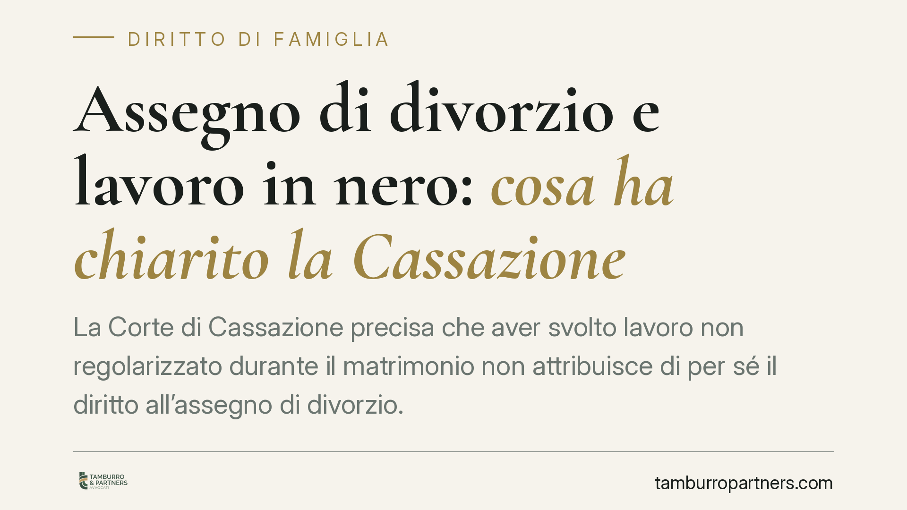

Assegno di divorzio e lavoro in nero: cosa ha chiarito la Cassazione
La Corte di Cassazione precisa che aver svolto lavoro non regolarizzato durante il matrimonio non attribuisce di per sé il diritto all'assegno di divorzio. Occorre dimostrare un sacrificio professionale legato alle scelte familiari e uno squilibrio economico ancora attuale tra gli ex coniugi. Senza questi elementi, il mancato accantonamento contributivo resta irrilevante ai fini del riconoscimento dell'assegno.

Il fatto
Un ex coniuge chiedeva l'assegno di divorzio sostenendo di aver lavorato "in nero" durante l'unione, ossia senza regolare contratto e senza versamenti previdenziali. La tesi: quel lavoro, pur non emerso, aveva contribuito al ménage familiare e aveva impedito la costruzione di una posizione contributiva propria.
La Corte d'Appello aveva respinto la domanda. La Cassazione conferma l'impostazione: il lavoro non regolarizzato, da solo, non fonda alcun automatismo. Bisogna provare qualcosa di più.
Inquadramento normativo
L'assegno di divorzio è disciplinato dall'art. 5, comma 6, della Legge n. 898 del 1970 (legge sul divorzio). Dopo le Sezioni Unite del 2018 (sentenza n. 18287), la funzione dell'assegno è insieme assistenziale e perequativo-compensativa.
In concreto significa che il giudice non guarda solo allo stato di bisogno. Valuta se lo squilibrio economico tra gli ex coniugi dipenda da scelte comuni fatte durante il matrimonio: ad esempio la rinuncia a un percorso professionale per dedicarsi alla famiglia o al lavoro dell'altro.
Il punto è proprio questo. Il profilo compensativo premia i sacrifici, non genericamente il fatto di aver lavorato senza contratto. Chi ha lavorato in nero ha comunque prodotto reddito: ciò che rileva è se quelle scelte lavorative siano state condizionate dal progetto familiare e se abbiano generato un divario che oggi persiste.
Cosa dice la Cassazione
La Corte fissa due passaggi.
Primo: il lavoro non regolarizzato non è un titolo automatico. Non esiste una presunzione per cui "ho lavorato in nero, quindi mi spetta l'assegno". Il mancato accantonamento previdenziale, in assenza di altri elementi, è un dato neutro.
Secondo: serve la prova concreta. Chi domanda l'assegno deve dimostrare:
- di aver rinunciato o compresso la propria carriera per esigenze familiari condivise;
- che da questa scelta è derivato uno squilibrio economico attuale rispetto all'ex coniuge;
- il nesso tra le decisioni prese in costanza di matrimonio e la situazione economica presente.
Senza squilibrio attuale, il presunto "danno contributivo" non produce effetti. Il giudice non risarcisce il passato in sé: valuta la condizione economica al momento del divorzio.
Implicazioni pratiche
Per chi si trova in una separazione o in un divorzio, la lettura è netta.
Non basta affermare di aver lavorato senza contratto. Occorre ricostruire il percorso: chi decideva le scelte lavorative, perché si è rinunciato a determinate opportunità, quale reddito o carriera avrebbe potuto realisticamente maturarsi.
La prova è a carico di chi chiede l'assegno. Dichiarazioni generiche non reggono. Servono elementi documentali e testimoniali coerenti: la ricostruzione della dinamica familiare pesa quanto i numeri.
Di contro, chi si oppone alla domanda può contestare proprio l'attualità dello squilibrio. Se le posizioni economiche dei due ex coniugi sono oggi comparabili, il richiamo al lavoro in nero non sposta l'esito.
Cosa fare in concreto
- Ricostruisci il percorso lavorativo dell'intera durata del matrimonio: periodi di attività, interruzioni, motivi delle scelte fatte.
- Raccogli prove del sacrificio professionale: rinunce a offerte, spostamenti per seguire l'altro coniuge, dedizione alla famiglia o all'attività dell'ex partner.
- Documenta lo squilibrio attuale: redditi, patrimoni, capacità di produrre reddito di entrambi al momento della domanda.
- Non affidarti a formule generiche: il richiamo al "lavoro in nero" senza contesto è irrilevante per il giudice.
- Valuta la posizione con un legale prima di impostare la domanda o l'opposizione: la strategia probatoria decide l'esito.
In sintesi
La Cassazione ribadisce che l'assegno di divorzio non è un automatismo. Il lavoro non regolarizzato, da solo, non attribuisce alcun diritto. Conta la prova di un sacrificio compiuto per la famiglia e di uno squilibrio economico che resiste ancora oggi. È su questi due elementi che si gioca la controversia.
---
*Contributo informativo a cura di Tamburro & Partners - Avv. Giuseppe Tamburro. Non costituisce parere legale.*
Ogni famiglia ha il suo equilibrio.
Separazione, divorzio, affidamento, assegno: se vuoi un confronto riservato su una specifica situazione, scrivi allo studio. Ti rispondiamo entro un giorno lavorativo.